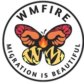

<!DOCTYPE html>
<html class="no-js" lang="en">


<head>
    <!-- Basic Page Info 
    =============================-->
    <title>WMFIRE Resources</title>
    <!-- CSS
    ================================================== -->  
    <link rel="stylesheet" href="css/default.css">
    <link rel="stylesheet" href="css/layout.css">
   <link rel="stylesheet" href="css/media-queries.css">
   <link rel="stylesheet" href="css/magnific-popup.css">

   <!-- Script
   ================================================== -->
   <script src="js/modernizr.js"></script>
   <script src="main.js"></script>
</head>
    
</html>

<body>
    <!-- Header
    =============================-->
    <header id="home">
        <nav id="nav-wrap">
            <a class="mobile-btn" href="#nav-wrap" title="Show navigation">Show navigation</a>
	        <a class="mobile-btn" href="#" title="Hide navigation">Hide navigation</a>

            <ul id="nav" class="nav">
                <li class="current"><a class="smoothscroll" href="#home">Home</a></li>
                <li><a class="smoothscroll" href="#about">About WMFIRE</a></li>
                 <li><a class="smoothscroll" href="#on-campus">On Campus Resources</a></li>
                 <li><a class="smoothscroll" href="#notable-orgs">Notable Organizations</a></li>
                 <li><a class="smoothscroll" href="#outside-wm">Resources Outside William & Mary</a></li>
                 <li><a class="smoothscroll" href="#more-info">More information</a></li>
             </ul> <!-- end #nav -->

        </nav><!-- end #nav-wrap -->

        <div class="row banner">
            <div class="banner text">
                <h1 class="responsive-headline">WMFIRE</h1>
                <ul class="social">
                    <li><a href="https://www.instagram.com/wmfire__"><i class="fa fa-instagram"></i></a></li>
                    <li><a href="https://www.facebook.com/FightingForImmigrantRightsandEquity"><i class="fa fa-facebook"></i></a></li>
                 </ul>
            </div>
        </div>
        <p class="scrolldown">
            <a class="smoothscroll" href="#about"><i class="icon-down-circle"></i></a>
         </p>
    </header>

    <section id="about">
        <div class="row">
            <div class="three columns">
                

            </div>

            <div class="nine columns main-col">
                <h2>ABOUT WMFIRE</h2>

                <p>WMFIRE (formerly known as UndocuTribe) addresses the inequities and obstacles faced by immigrant, migrant, and undocumented community-at-large through education, empowerment, and action.
                
            </br>
        </br>
            Our mission is to gather information and resources, provide advocacy, and promote awareness of immigration issues to incite positive change. We center on making the W&M community and beyond equitable for all, regardless of immigration status.</p>

            </div><!-- end .main-col -->
        </div>

    </section><!-- About Section End-->

    <!-- Resources Section
   ================================================== -->

   <section id="on-campus">
           <!-- On Campus Resources
      ----------------------------------------------- -->
      <div class="row on-campus">

        <div class="three columns header-col">
           <h1><span>On Campus Resources</span></h1>
        </div>

        <div class="nine columns main-col">

           <div class="row item">

              <div class="twelve columns">

                 <h3>WMFIRE (WM Fighting For Immigrant Rights and Equity - This is us!) </h3>
                <p>We are more than happy to assist anyone in our community! We will do our best to provide you with guidance and resources. If something is out of our reach, we have connections on and off campus who may be able to help. </p>
              </div>

           </div> <!-- item end -->

           <div class="row item">

              <div class="twelve columns">

                 <h3>Reves Center</h3>
                 <p>The Reves Center works closely with the law firm McCandlish Holton of Richmond to provide support and assistance to DACA students on campus. Some services are free for W&M students while others are offered at a reduced rate. For more information, click on the link below.</p>
                 <p class="info"><em class="date"><a href="https://www.wm.edu/offices/sel/daca-support/resources/index.php">DACA Resource Hub</a></em></p>

              </div>

           </div> <!-- item end -->

           <div class="row item">

              <div class="twelve columns">

                 <a href="https://www.wm.edu/offices/studentdiversity/"><h3>Center of Student Diversity</h3></a>
                 <p>They focus on enhancing the experiences of students, particularly those of diverse backgrounds. They work closely with many student-run organizations and other administrators in an attempt to improve our community. Feel free to visit them!</p>
                <a href="https://www.wm.edu/offices/studentdiversity/">https://www.wm.edu/offices/studentdiversity/</a>
              </div>

           </div> <!-- item end -->

           <div class="row item">

            <div class="twelve columns">

               <h3>Counseling Center</h3>
               <p>Counseling sessions are free at the Wellness Center. If referring a student, know that there is a counselor with experience working with undocumented students.</p>
               <p class="info"><em class="date">Dr. Carina Sudarsky-Gleiser</em></p>
            </div>

         </div> <!-- item end -->

         <div class="row item">

            <div class="twelve columns">

               <h3>W&M Law School Immigration Clinic</h3>
               <p>The Immigration Clinic assists noncitizens with various immigration matters, including the citizenship and naturalization process. The Clinic also aids noncitizens seeking relief as victims of crime (U visa), domestic violence (VAWA), and human trafficking (T visa), as well as those currently held in detention seeking release on bond.</p>
               <p class="info"><em class="date">Contact: Prof. Stacy Kern-Scheerer </br>
                Email: <a href = "mailto: sekernscheerer@wm.edu">sekernscheerer@wm.edu</a>       </br>   Number: <a href="tel:757-221-1460">(757) 221-1460</a></em></p>
            </div>

         </div> <!-- item end -->

         <div class="row item">

            <div class="twelve columns">

               <h3>Dare To Dream Fund (Funding for DACA renewals)</h3>
               <p>Provides emergency support for students at W&M with heightened vulnerability due to their immigration classification. Can be used for DACA Renewal Fees</p>
               <!-- <p class="info"><em class="date">
                To donate: 
                https://giving.wm.edu/give-now/?appealcode=20N00&allocation=4393 </br>
                To request funds: 
                https://forms.wm.edu/form/view/41062/bee993cf06d8ce25611847e5b380a661 </em></p> -->
                <a href='https://giving.wm.edu/give-now/?appealcode=20N00&allocation=4393'><button>Donate</button></a>
                <a href='https://forms.wm.edu/form/view/41062/bee993cf06d8ce25611847e5b380a661'><button>Request Funds</button></a>
            </div>

         </div> <!-- item end -->

         <div class="row item">

            <div class="twelve columns">

               <h3>W&M LatinX Alumni Jorge Alberto Urcuyo Scholarship </h3>
               <p>Provides need-based scholarship support to students who are residents in the U.S. but whose immigration status or classification makes them ineligible to receive federal student aid, with a preference for those who have been granted Deferred Action for Childhood Arrivals (DACA) or Temporary Protected Status (TPS).</p>
            </div>

         </div> <!-- item end -->

         <div class="row item">

            <div class="twelve columns">

                <a href="https://www.facebook.com/WMEmergencyFund/ "><h3>Refugee Student Support Fund</h3></a>
               <p>Provides emergency support for students at William & Mary with heightened vulnerability due to their refugee status.</p>
               <p class="info"><em class="date">To Donate & Learn More: 
                https://giving.wm.edu/give-now/?appealcode=20N00&allocation=4702 </br>
                https://www.facebook.com/WMEmergencyFund/
                </em></p>
            </div>

         </div> <!-- item end -->

         <div class="row item">

            <div class="twelve columns">

               <h3>HEART Fund</h3>
               <p>The Health Emergency and Resources for the Tribe assists students experiencing financial hardships due to extenuating circumstances. At the moment, it is providing aid in response to COVID-19. For more information about how to donate or apply can be found in the link below:</p>
               <p class="info"><em class="date">https://www.wm.edu/offices/deanofstudents/heartfund/index.php </em></p>
            </div>

         </div> <!-- item end -->

        </div> <!-- main-col end -->

     </div> <!-- End On Campus Resources -->
   </section>

   <section id="notable-orgs">
       <!-- Notable Organizations
      ----------------------------------------------- -->
      <div class="row Notable-Organizations">

        <div class="three columns header-col">
           <h1><span>Notable Organizations</span></h1>
        </div>

        <div class="nine columns main-col">

           <div class="row item">

              <div class="twelve columns">

                 <h3>Virginia Coalition of Latino Organizations (VACOLAO) </h3>
                 <p class="info">Serve as a working alliance among organizations in Virginia that serve or support the interest of the Latino communities. </p>

                 <p>http://vacolao.org/</p>

              </div>

           </div> <!-- item end -->

           <div class="row item">

              <div class="twelve columns">

                 <h3>National Korean American Service & Education Consortium (NAKASEC)</h3>
                 <p class="info">Grassroots organization founded in 1994 by local community centers to project a progressive voice and promote the full participation of Korean and Asian Americans within the larger society. </p>

                 <p>https://nakasec.org/</p>

              </div>

           </div> <!-- item end -->

           <div class="row item">

              <div class="twelve columns">

                 <h3>The Virginia Latina Advocacy Network (VALAN)</h3>
                 <p class="info">operates as an extension of NLIRH, serving as the voice and advocacy presence in Virginia. The VA LAN works with activists throughout Virginia to organize our communities around issues-based campaigns that impact our families and our lives. </p>

                 <p>https://www.latinainstitute.org/en/virginia</p>

              </div>

           </div> <!-- item end -->

           <div class="row item">

              <div class="twelve columns">

                 <h3>ICE out of RVa</h3>
                 <p class="info">Grassroots organization with the focus of making RVa a safer community for immigrant families in fear of ICE; work to uplift the work of activists</p>

                 <p>https://www.facebook.com/ICEOUTOFRVA/</p>

              </div>

           </div> <!-- item end -->

           <div class="row item">

              <div class="twelve columns">

                 <h3>Sin Barreras (Charlottesville) </h3>
                 <p class="info">non-profit that focuses on outreach to the immigrant (primarily Hispanic) community, connecting individuals to services such as workshops in Health, Immigration, Legal affairs, Banking, Education, and others. They also provide individual services, such as low-cost legal counseling and work one on one in daily obstacles immigrants face.</p>

                 <p>https://sinbarrerascville.com </p>

              </div>

           </div> <!-- item end -->

           <div class="row item">

            <div class="twelve columns">

               <h3>United We Dream </h3>
               <p class="info">United We Dream is the largest immigrant youth-led community in the country. We create welcoming spaces for young people – regardless of immigration status – to support, engage, and empower them to make their voice heard and win! </p>

               <p>https://unitedwedream.org</p>

            </div>

         </div> <!-- item end -->

        </div> <!-- main-col end -->

     </div> <!-- End Notable Organizations -->
    </section>  

    <section id="outside-wm">
        <!-- Resources outside the William & Mary Community:
      ----------------------------------------------- -->
      <div class="row outside-resources">

        <div class="three columns header-col">
           <h1><span>Resources outside the William & Mary Community</span></h1>
        </div>

        <div class="nine columns main-col">

           <div class="row item">

              <div class="twelve columns">

                 <h3>Dream Project and Mentoring Program</h3>
                 <p class="info">Non-profit organization in Arlington that encourages and supports promising immigrant youth in their pursuit of higher education through mentoring, scholarships, advocacy, and community outreach. 
                </p>

                 <p>https://www.dreamproject-va.org/mentoring/</p>

              </div>

           </div> <!-- item end -->

           <div class="row item">

              <div class="twelve columns">

                 <h3>Just Neighbors</h3>
                 <p class="info">provide immigration legal services to low-income immigrants and refugees of all faiths and nationalities, especially those who are most vulnerable.</p>

                 <p>https://www.justneighbors.org/ </p>

              </div>

           </div> <!-- item end -->

           <div class="row item">

              <div class="twelve columns">

                 <h3>Legal Aid Justice Center</h3>
                 <p class="info">The Legal Aid Justice Center is committed to providing a full range of services to clients, including services our federal and state governments choose not to fund. Free Informational sessions at Mason for current students are currently under development.</p>

                 <p>https://www.justice4all.org/ </p>

              </div>

           </div> <!-- item end -->

           <div class="row item">

              <div class="twelve columns">

                 <h3>Ayuda</h3>
                 <p class="info">Serving immigrants in the Washington, DC, metropolitan region. Has 36 full-time, bilingual attorneys and social workers/case managers providing legal, social, and language access services</p>

                 <p>https://ayuda.com/</p>

              </div>

           </div> <!-- item end -->

           <div class="row item">

              <div class="twelve columns">

                 <h3>Capital Immigrant’s Rights Coalition (CAIR) </h3>
                 <p class="info">Only legal service provider providing legal representation to detained Immigrants in facilities in DC, MD, and VA.</p>

                 <p>https://www.immigrationadvocates.org/nonprofit/legaldirectory/organization.392734-Capital_A rea_Immigrants_Rights_Coalition </p>

              </div>

           </div> <!-- item end -->

           <div class="row item">

            <div class="twelve columns">

               <h3>Tahirih Justice Center</h3>
               <p class="info">The Tahirih Justice Center is a national nonprofit that has served over 25,000 courageous individuals fleeing violence since 1997. Our efficient, effective, and innovative model of service is now delivered from five locations, and we’re committed to serving as many immigrant women and girls as possible.</p>
                <p>https://www.tahirih.org/</p>

            </div>

         </div> <!-- item end -->

         <div class="row item">

            <div class="twelve columns">

               <h3>Edu-futuro</h3>
               <p class="info">To empower immigrant and underserved youth and families through mentorship, education, leadership development and parent engagement.</p>
               <p>https://edu-futuro.org</p>

            

            </div>

         </div> <!-- item end -->

        </div> <!-- main-col end -->

     </div> <!-- End Resources outside the William & Mary Community -->
    </section>

    <section id="more-info">
        <!-- Other Resources -->
     <div class="row other-resources">

        <div class="three columns header-col">
           <h1><span>For more information: (mostly for allies to learn more)</span></h1>
        </div>

        <div class="nine columns main-col">

            <div class="row item">

                <div class="twelve columns">
    
                   <h3>Book: “We Are Not Dreamers Undocumented Scholars Theorize Undocumented Life in the United States”</h3>
                   <p class="info">By centering the voices of undocuemtned scholars, Leisy J/ Abrego and genevieve Negron-Gonzales capture the complexity of experiences, the intersectionality of identities, and the raw devastation and resilience of undocumented life. </p>
                    <p>https://www.dukeupress.edu/we-are-not-dreamers</p>
    
                </div>
    
             </div> <!-- item end -->

             <div class="row item">

                <div class="twelve columns">
    
                   <h3>Book: “America for Americans: A History of Xenophobia in the United States”</h3>
                   <p class="info">Erika Lee examines United States history to demonstrate how Xenophobia is a defining trait of our nation. She effectively connects the past to contemporary politics. </p>
                    <p>https://www.barnesandnoble.com/w/america-for-americans-erika-lee/1130777503?ean=9781541672611 </p>
                </div>
    
             </div> <!-- item end -->

             <div class="row item">

                <div class="twelve columns">
    
                   <h3><a href="https://mydocumentedlife.org">Blog: My Undocumented Life</a></h3>
                   <p>It provides up-to-date information and resources to undocumented students, their families, and allies (including educators, counselors, and administrators). </p>
                    <a href="https://mydocumentedlife.org">https://mydocumentedlife.org</a>
                </div>
    
             </div> <!-- item end -->

             <div class="row item">

                <div class="twelve columns">
    
                   <h3>Life After College: A Guide for Undocumented Students</h3>
                   <p class="info">This guide includes information, tips, and reouces about life after college for undocumented students (now undocumented graduates) </p>
    
                   <a href="https://mydocumentedlife.org">https://mydocumentedlife.org</a>
    
                </div>
    
             </div> <!-- item end -->

        </div>
    </div>
    </section>
    
   <!-- footer
   ================================================== -->
   <footer>

    <div class="row">

       <div class="twelve columns">

          <ul class="social-links">
            <li><a href="https://www.instagram.com/wmfire__"><i class="fa fa-instagram"></i></a></li>
            <li><a href="https://www.facebook.com/FightingForImmigrantRightsandEquity"><i class="fa fa-facebook"></i></a></li>
          </ul>

       </div>

       <div id="go-top"><a class="smoothscroll" title="Back to Top" href="#home"><i class="icon-up-open"></i></a></div>

    </div>

    <ul class="copyright">
        <a href="https://www.styleshout.com/free-templates/ceevee/"> Template by CeeVee </a>
         
     </ul>

 </footer> <!-- Footer End-->
    <!-- Java Script
   ================================================== -->
   <script src="http://ajax.googleapis.com/ajax/libs/jquery/1.10.2/jquery.min.js"></script>
   <script>window.jQuery || document.write('<script src="js/jquery-1.10.2.min.js"><\/script>')</script>
   <script type="text/javascript" src="js/jquery-migrate-1.2.1.min.js"></script>

   <script src="js/jquery.flexslider.js"></script>
   <script src="js/waypoints.js"></script>
   <script src="js/jquery.fittext.js"></script>
   <script src="js/magnific-popup.js"></script>
   <script src="js/init.js"></script>

   <style>

    h3{
        color: rgb(223, 100, 0);
    }

    h1{
        color: rgb(223, 100, 0);
    }

    a{
        color: rgb(223, 100, 0);
    }
</style>
</body>